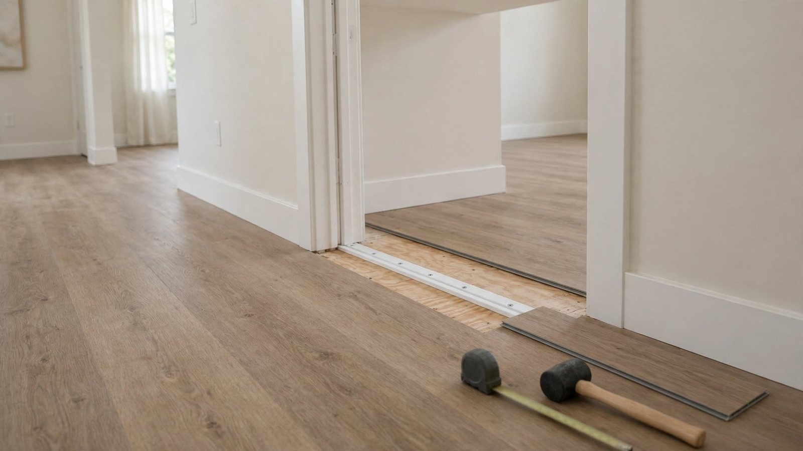
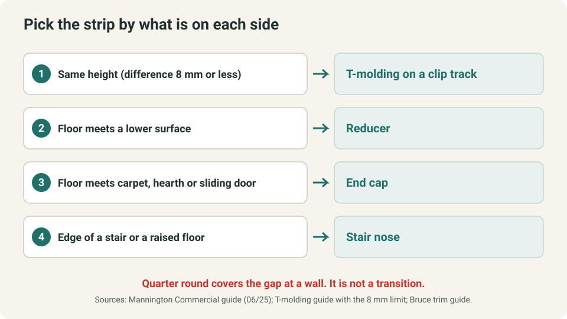
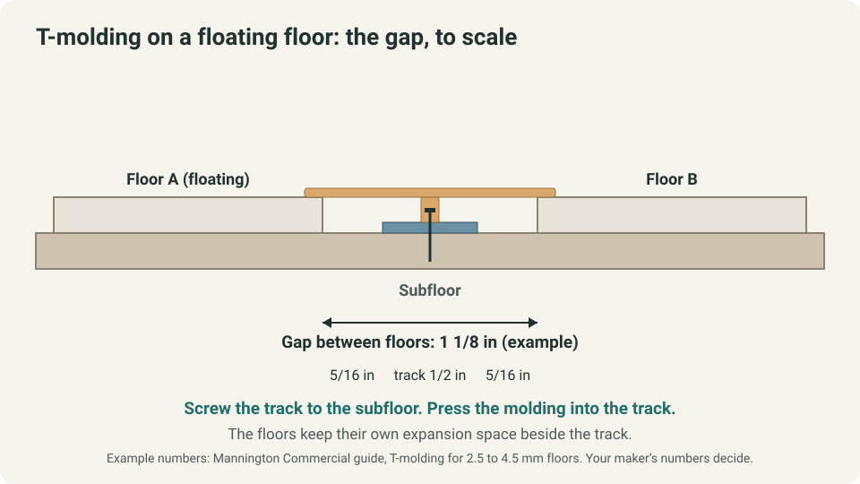
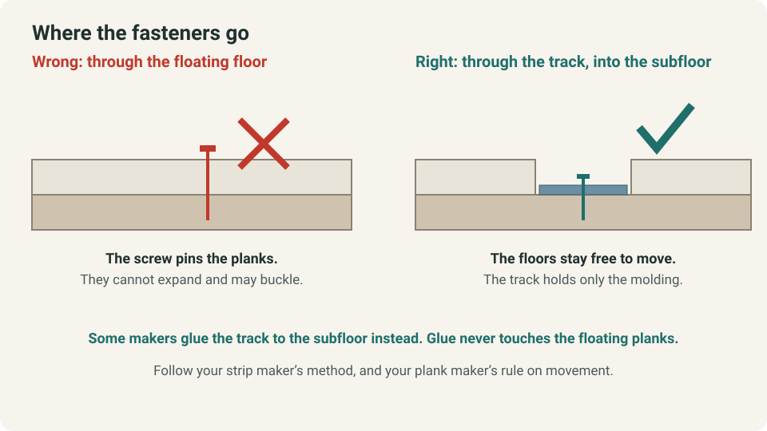

WEEKEND PROJECTS · FLOORING
How to Install Flooring Transition Strips (T-Molding, Reducer, End Cap)

A transition strip looks like trim, but on a floating floor it also decides whether the floor can move. Choose it by the height difference, size the gap before the planks go down, and fasten it to the subfloor, never through the planks. This guide uses three real installation documents to show the numbers makers publish, and where they differ.
The quick answer
- Match the strip to the height difference. One T-molding guide says to use a T-molding only when the floors differ by 8 mm or less, and a reducer beyond that.
- Plan the gap first. The gap between floors depends on the strip. Examples: 1 1/8 inches for a T-molding and 1 inch for a reducer or end cap in one guide, and 0.6 to 1.6 inches for a clip track in another.
- Fasten the track to the subfloor. Never nail or screw through floating planks, and keep adhesive off them.
- Read both guides. Your floor maker’s rules on movement and your strip maker’s steps must both be met.
Quick plan
| Item | Detail |
|---|---|
| Time | Short, once the gap was planned before the planks went down |
| Cost | One strip and track per opening, plus flat screws, or anchors on concrete |
| Best for | Doorways and joints between floating floors and other floors |
| Not for | Stairs, wet-area thresholds or any joint that needs a code check |
| Goal | A flush, solid strip that never pins the floor |
Step 1: Decide what the transition has to do
A transition covers a gap and joins two surfaces. The profile names come from the makers’ own drawings, so check the drawing, not just the label.

| Profile | What it joins | Note |
|---|---|---|
| T-molding | Two floors of equal or similar height, often in a doorway | Covers the expansion space between them |
| Reducer | A floor that meets a lower surface such as vinyl or tile | Slopes down to the lower floor |
| End cap | Floor to carpet, a hearth or a sliding door | Fills the gap at that edge |
| Stair nose | The edge of a step | Needs its own installation method |
Quarter round is different. Mannington describes it as trim that covers the gap between baseboard and floor, and Bruce says to attach it to the wall, not the floor, so it never blocks the expansion space.
Step 2: Measure the height difference and choose the profile
- Lay a straightedge across both floors.
- Measure from the underside of the straightedge to the lower floor, and note which side is higher.
- Compare the difference with the strip maker’s limit.
One T-molding guide, hosted by The Home Depot, says a T-molding connects floors of very similar thickness and warns not to use it when the height difference is greater than 8 mm: use a reducer instead. It also says floors 5 to 9 mm thick need no shim and thicker ones do. Mannington’s guide sizes its strips by floor thickness: T-moldings for 2.5 to 4.5 mm and 5 to 8 mm floors, reducers for 2 to 5.5 mm and 6 to 8 mm floors, and end caps for 2 to 5 mm and 6 to 8 mm floors.
Worked example (illustrative). Your plank is 6 mm thick and the next room is 6 mm too. The difference is 0, so a T-molding is the right profile. If the next room’s floor is 16 mm, the difference is 10 mm. That is more than 8 mm, so choose a reducer, and check its stated range.
Step 3: Plan the gap before you lay the planks
The gap between the two floors must be wide enough for the track and for each floor’s own expansion space. Makers publish different numbers.

| Source | Gap or spacer | Where the track goes |
|---|---|---|
| Mannington Commercial guide (06/25) | T-molding: 1 1/8 in gap, track centered with 5/16 in each side. Reducer and end cap: 1 in gap | Track centered; 1/4 to 5/16 in expansion gap kept |
| T-molding guide with clip track | Gap at least 0.6 in (15 mm) and at most 1.6 in (40 mm) | Clip track in the center of the gap |
| Bruce hardwood trim guide | A temporary spacer block 3/4 in wide plus expansion space (threshold), or 1/2 in plus expansion space (T-molding), set on the subfloor | Remove the block when the flooring is done |
Your plank maker also sets a perimeter gap. The Lowe’s rigid-core document asks for 1/4 inch and the VevoXL document for 3/8 inch. The same two documents differ on when a doorway strip is needed. Lowe’s says transitions are required only in a room or area larger than 100 lineal feet in any direction, and VevoXL says areas over 30 feet long or wide need transition pieces, non-square rooms need expansion or transition gaps, and every door opening needs an expansion gap between rooms. Do not average them. For subfloor checks before you start, see our guide to preparing a subfloor for LVP.
Step 4: Fasten the track to the subfloor, not the floor

- Measure and trim. Mannington says to measure and trim the strip to fit. The clip-track guide says to score the top and bottom of the molding and track and snap them on a hard surface.
- Center the track. Put it in the middle of the gap, with a shim under it if your guide calls for one.
- Attach it. Mannington screws the track to the subfloor with the included screws, or glues it with its own adhesive. The clip-track guide uses flat screws about 1 inch from each end and about 6 inches apart, and says round-head screws get in the way of the molding.
- Concrete. The same guide uses a 1/4-inch masonry bit and plastic anchors, and says never to drill deeper than 1 inch into the concrete.
- Press the strip in. Mannington says it will not snap in all at once: start at one end and work along, or use a rubber mallet.
- Check it sits flush. The clip-track guide warns that a strip not flush with the planks is a tripping hazard.
The rule that never changes: the floating floor must stay free. Bruce says never to fasten a T-molding or threshold to the hardwood floor so it can expand and contract freely. Vevo’s document adds that moldings must not be fixed in a way that restricts the floor.
Step 5: Special cases
- Hardwood. Bruce’s guide uses 6d finish nails and/or construction adhesive on the subfloor for its moldings, plus a bead of wood glue at a reducer’s edge. That is a hardwood method, not a floating-vinyl one. Over radiant heat it says to use only construction adhesive.
- Carpet, hearth or sliding door. Use an end cap. Mannington’s guide describes it as filling the gap between the floor and carpet, hearths or sliding doors.
- Stairs. Use a stair nose, not a doorway strip. Mannington requires polyurethane adhesive for its top step and suggests finishing nails for added security. Bruce says its overlap stair nose is not for staircases, only its flush-fit one. Check local rules for stairs.
Step 6: Dry-fit and finish
- Lay the strip in place without fastening. Check that it covers the whole gap with no exposed edge.
- Open and close the door to check clearance.
- Walk across it. It should not rock or lift.
- Install the track and strip as in Step 4, then recheck that it is flush.
Quick win (10 minutes)
Before you order, measure each opening: the height of both floors, the width of the gap you will leave, and the floor thickness. Those three numbers tell you the profile and the size of the strip.
Common mistakes
- Using a T-molding across a height difference above the maker’s limit.
- Leaving no room for the track, so the planks touch it.
- Screwing or nailing through floating planks.
- Gluing the molding’s wings to the planks.
- Choosing a strip by color before checking the floor thickness range.
- Using quarter round or wall trim as a transition.
When to call a professional
- The two floors differ by more than the strips you can find handle.
- The substrate is damaged, uneven or hidden pipes or heating may sit under a screw location.
- You are fitting stairs.
- Two instructions conflict and the makers will not answer in writing.
FAQ
Do I need a transition between rooms with the same LVP?
It depends on your plank’s instructions. The Lowe’s document requires transitions only for areas larger than 100 lineal feet in any direction, while VevoXL asks for them over 30 feet, in non-square rooms and at every door opening. Follow your own.
Can I nail or screw a transition through the planks?
No. Bruce says never to fasten a T-molding or threshold to the hardwood flooring, and the other guides attach the track to the subfloor.
Can I glue a transition strip?
Only as your strip maker allows. Mannington lists its own adhesive as an alternative to screws for the track, and Bruce uses construction adhesive for hardwood moldings. Glue must not reach the floating planks.
How wide should the gap be?
It depends on the strip. Examples are 1 1/8 inches for a T-molding and 1 inch for a reducer in the Mannington guide, and 0.6 to 1.6 inches for a clip track. Read the guide for your strip.
What if the floors differ by more than 8 mm?
The clip-track guide says to use a reducer instead of a T-molding when the height difference is greater than 8 mm.
Can I use quarter round at a doorway?
No. Quarter round covers the gap at a wall and is attached to the wall, not the floor.
What this guide assumes
It covers doorway and room-to-room transitions on a floating floor in a typical U.S. home, with notes on hardwood. The numbers come from three installation documents and are examples, not rules for your strip. Stairs are only touched on. HomeProjectWise has not performed this installation, and we do not endorse a brand or product.
Keep going
- How to prepare a subfloor for LVP before you lay the planks that meet the strip.
- All HomeProjectWise guides for more weekend projects.
Sources and last checked
All five documents were opened and read on 15 November 2026. They are maker documents for specific products, so your own strip’s instructions override them.
- Mannington Commercial guide (06/25): https://fkqgyt.files.cmp.optimizely.com/download/6c2c42de768311f0b638aee065b00814
- T-MOLDING installation instructions (clip track, hosted by The Home Depot): https://images.thdstatic.com/catalog/pdfImages/1a/1abbc819-a4b1-4759-83ef-ef8d7b3d87c6.pdf
- Bruce (AHF), Hardwood Trim and Transition Installation: https://pdf.lowes.com/productdocuments/18cc831c-1cce-4745-9e00-50cd8b384ea0/69655205.pdf
- Lowe’s rigid-core SPC installation document (file 63177847): https://pdf.lowes.com/productdocuments/4c3436b4-eaf4-4dd2-b203-79b01103d77b/63177847.pdf
- VevoXL SPC installation instructions (2024): https://cdn.shopify.com/s/files/1/0595/2389/1315/files/VevoXL_Installation_Instructions_Updated_2024.pdf